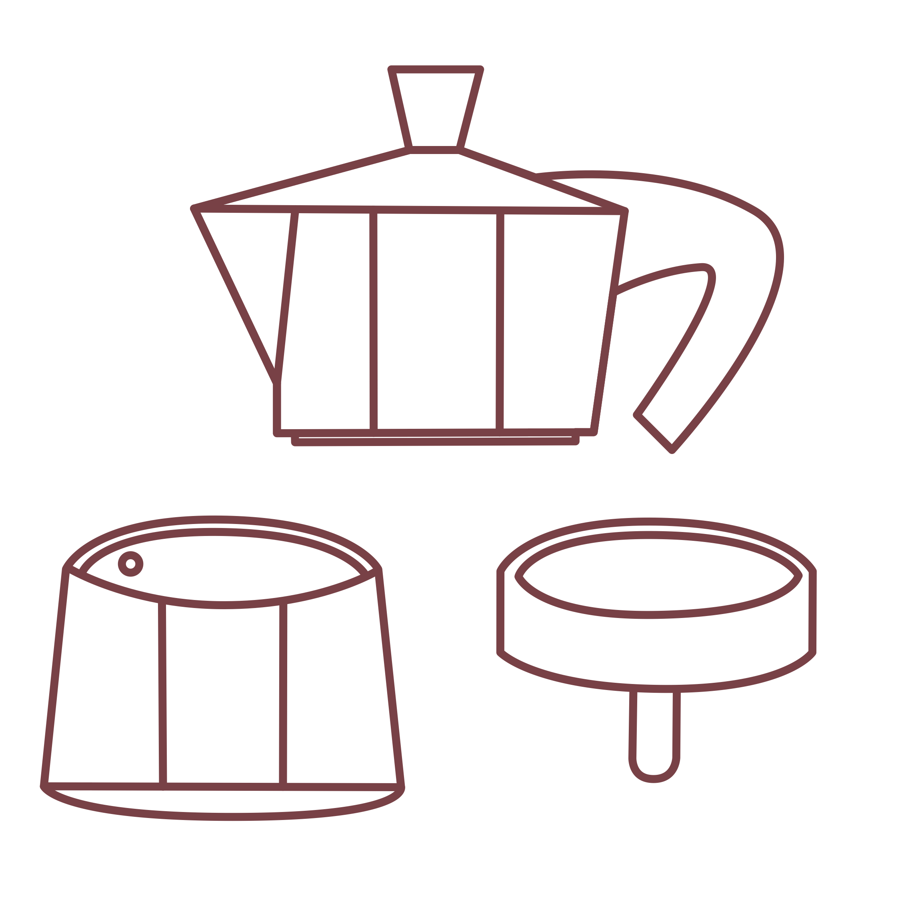
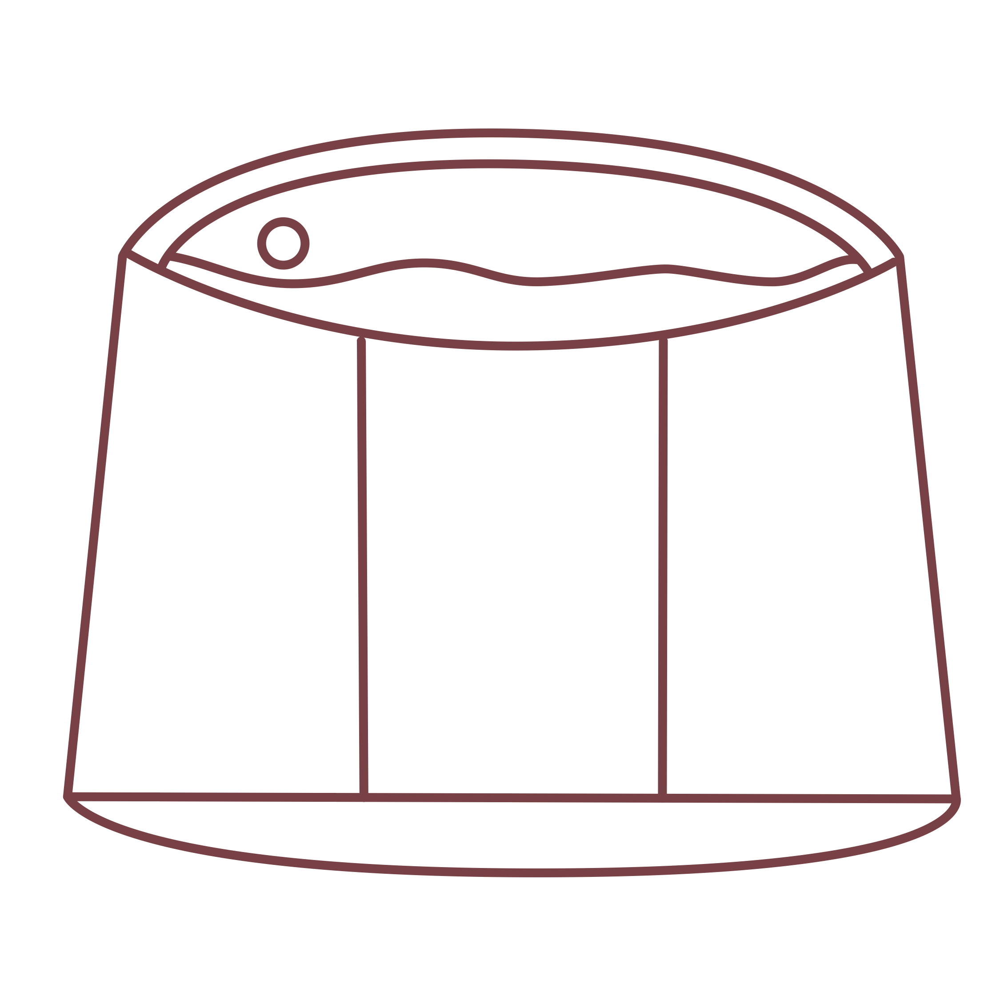
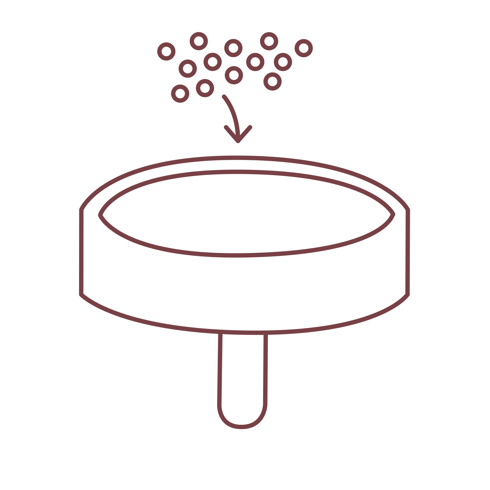
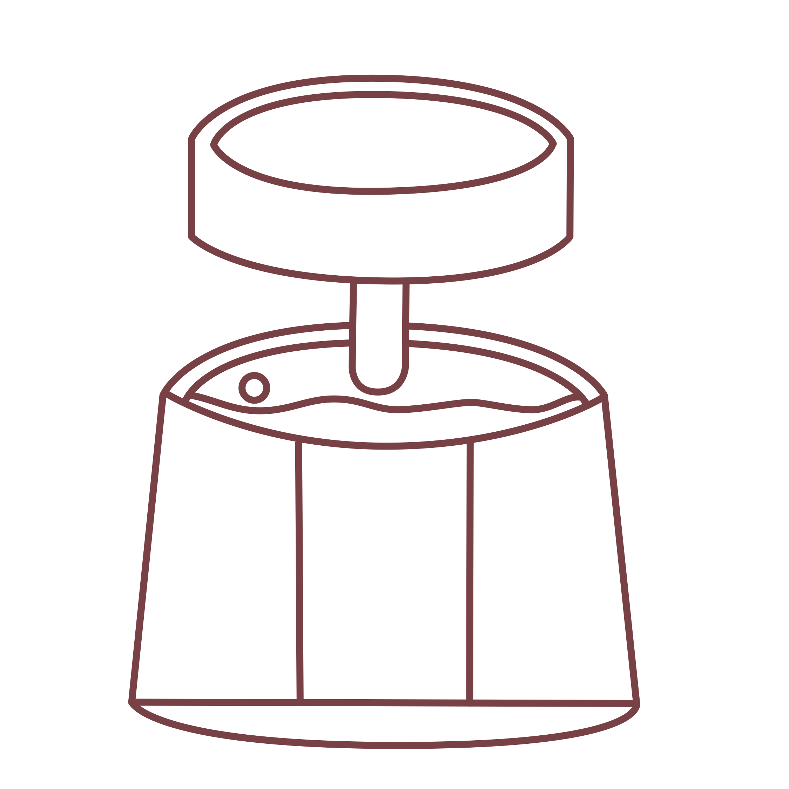
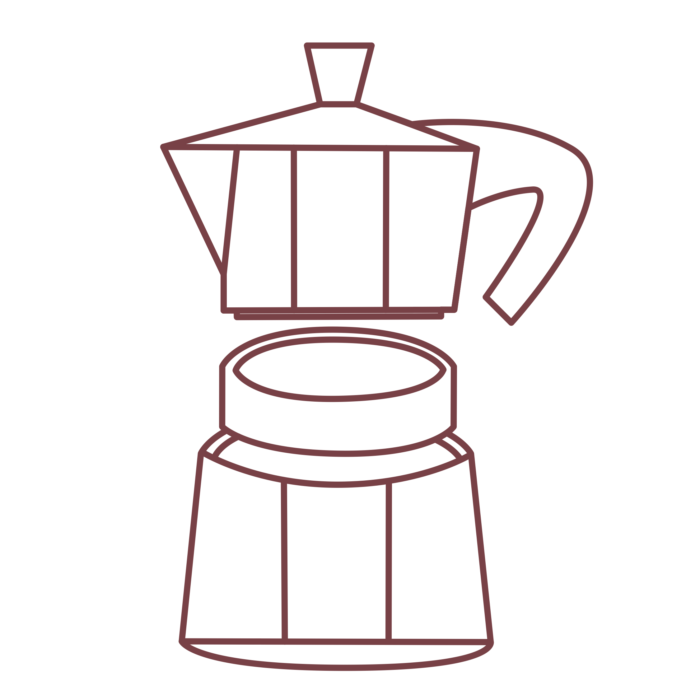
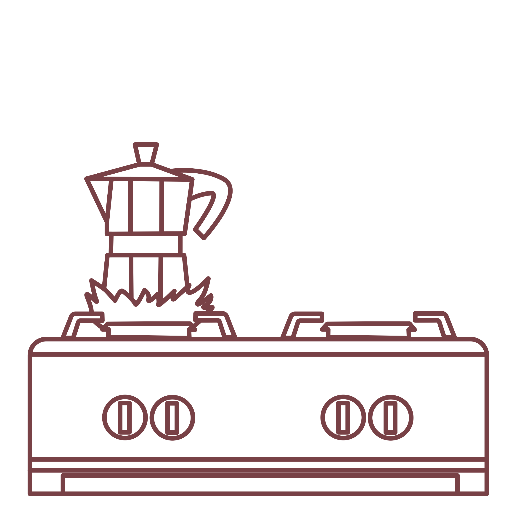

oroma
Coffee was founded in Oromo, Africa in 1XXX. It can be found all over the world and in different ways. Coffee was founded in Oromo, Africa in 1XXX. It can be found all over the world and in different ways. Coffee was founded in Oromo, Africa in 1XXX. It can be found all over the world and in different ways.
moka pot
ground coffee (fine setting)
stovetop
Disassemble the moka pot to prepare for brewing.
Fill the bottom resevoir with cold water, up to, but not above the pressure valve.
Fill the middle compartment with finely ground coffee (all the way). Make sure not to press hard onto the grounds.
Set the middle compartment with coffee into the bottom water resevoir.
Reassemble the moka pot, making sure to screw the top lid very securely.
Place the assembled moka pot over low/medium heat.
Listen and watch for coffee to funnel through the inner column (about 5 minutes).
When sputtering noise begins, turn off heat and serve immediately.